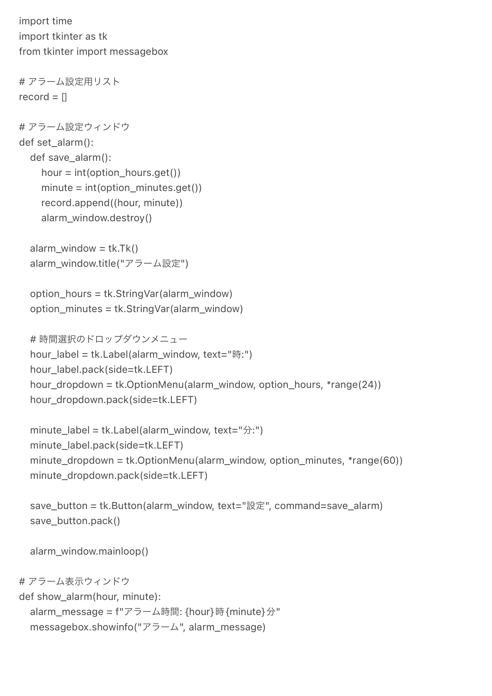
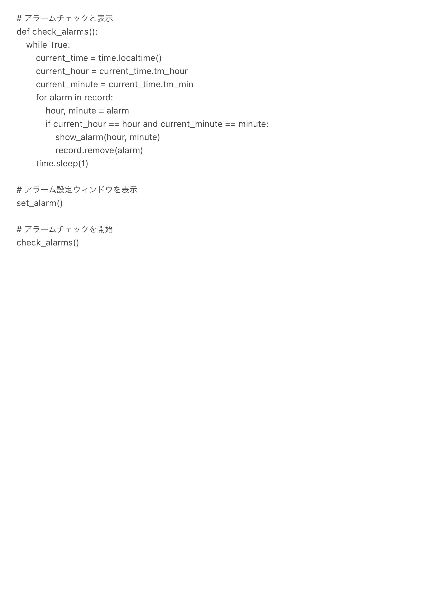
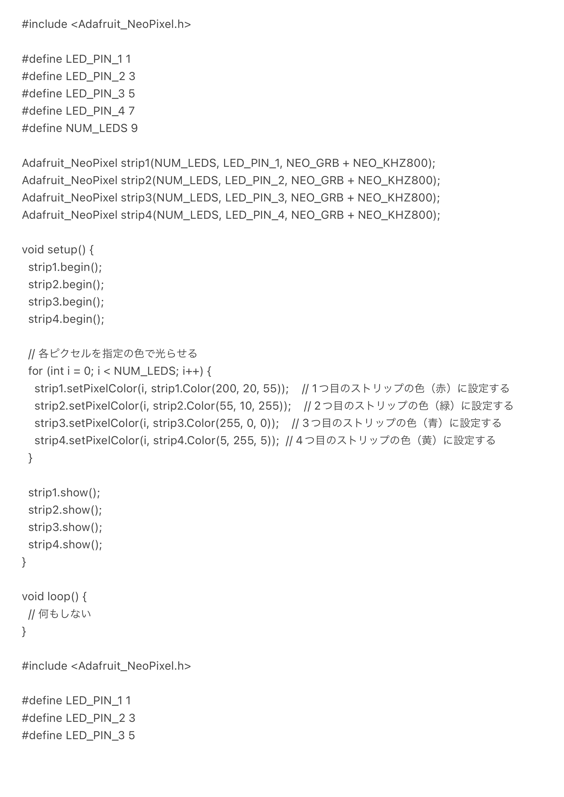
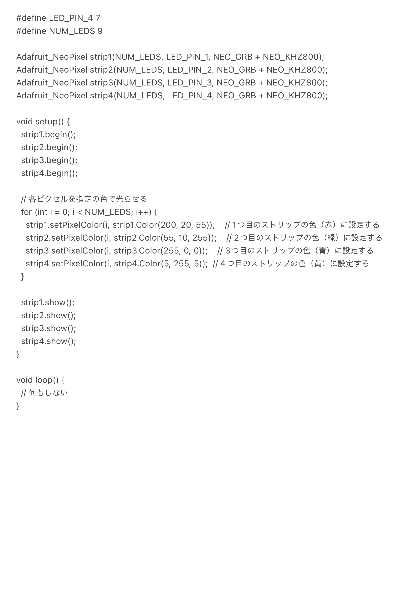

概要
森のインテリア
構想
私たちのグループはメディアアートを選択した。
メディアアートではあるが、ただ鑑賞するだけでなく何かしらの効用をもたらすような物にしたい。
そこで、自分たちの嫌なものと好きなものを書き出し、それらを結びつけることで新たな製品を作り出すことにした。
以下がそのメモである。

好きなものからは鳥を、嫌なものからは寝付けないことをピックアップして結び付けた。
寝付けないことを改善するため、リラックス効果のあるものを作りたい。
私たちは鳥のランプのようなものを作ることになった。
鳥のランプに付けたい機能は上記のメモにもあるが、
・音声
・インテリアになるデザイン
・香り
・アラーム、タイマー
・専用アプリ
という案が出た。
これらを元に制作していく。
プロセスメモ
2023.05.29
進めたこと
まずは構想を練ってどのような物を作るのかを大まかに決定した。
（詳しくは『構想』を参照）
課題
出た案が現実的に再現可能なのかが分からない。
今後進めること
再現するために必要になるものを調査する。
ランプのデザインを考える。
2023.06.05
進めたこと
前回出た案を実現させるために必要になるものを考えた。
デザインについての案を出した。
必要になるものは、
・音声のためのスピーカー
・インテリアにするためのデザイン性に優れた本体
・アラームやタイマー機能、癒し効果のあるような音声を選択できる機能を兼ね備えた専用アプリ
・香りを出すための見た目も可愛いアロマビーズ
である。
デザインに関しては、3Dプリンターを使用すると光を通さない素材になってしまうため、レーザーカッターでアクリル板をカットして作成することになった。
レーザーカッターでは曲線を伴う立体的なデザインを再現するのは難易度が高いため、平面にカットしたものを繋ぎ合わせることで鳥の形を再現したい。
以下がデザインのスケッチである。

課題
機能が多すぎるため実現可能であるか分からない。
専用アプリに関しては作るのに触れたことがないソフト、言語を使用する必要があることが分かった。
また、完成後にスマホで操作するにはアプリ制作者の権限を申請する必要があり期間内に間に合わないことが予想される。
本体のデザインに関してはどのように光を通わせるのかを検討する必要がある。
今後進めること
機能が多すぎるため、絞る必要がある。
専用アプリを作るのは現実的ではないため、専用のWebサイトを作ることで代替できないか検証する。
本体に機能をつける際に配線などが透けないようにする方法を考える。
2023.06.12
進めたこと
本体デザインの調整
必要になるものを更に具体的に検討
Webサイトの試作
本体デザインを当初は平面を繋ぎ合わせた立体にする予定だったが、光源の確保や動線の繋ぎ方に難航することが予想されたため、大幅に変更した。
一枚の平面のアクリルに彫刻したものに下から光を当てることで彫刻した部分が光る仕組みを利用する。
下記が新たなデザイン案である。

必要になるものは、
・本体（アクリルにイラストを彫刻したもの）
・土台（光源を下に仕込む必要がある）
・テープタイプのLED（NeoPixel）
だと分かった。
Webサイトの試作でまずはアラーム機能を再現することに取り組んだ。
phythonだけでは作成できないため、Javaを使用し、動画などを参考に制作していく。

実際に作成したサイト


タイマーを設定し、時間になればアラームが鳴る仕組みを再現することには成功した。
課題
土台にアクリル板をどのように固定するのか。
Webサイトに関して、このままでは画像や音声を私たちが好きなものにあらかじめ設定することはできるが、ユーザーが選択することはできない。
また、睡眠導入BGMのような機能を付けたいが、再現可能か分からない。
今後進めること
実際にアクリル板に印刷をしてみる。
土台の設計
引き続きWebサイトの試作
2023.07.10
進めたこと
授業外で印刷したアクリル板を元にアイディアの練り直し・デザイン
土台の設計
NeoPixelの動線について
印刷したアクリル板

これを光らせるだけでは面白みが足りないため、４層にしてそれぞれの層を別の色に光らせることにした。
それに伴い土台も4枚のアクリルが支えられて、NeoPixelが貼れるように設計する。
板に溝を作り、そこにNeoPixelを貼りたいのだが、レーザーカッターで溝を作るのは難しい。
そこで、土台をいくつかのパーツに分解し、接着剤で繋ぎ合わせることで再現したい。
続いて、NeoPixelの銅線に関してである。
私たちは4つのNeoPixelを一つのPCでまとめて操作したい。
他の班の人に相談してみたところ、NeoPixelを4つに切り分け、それぞれ銅線をハンダで貼り付けてマイコンボードに繋ぐ必要があることが分かった。
また、4つのNeoPixelはそれぞれ9つのLEDを含むため、PCからの電力だけでは光らない。
そのため、外部電源に繋ぐ必要があることが判明した。
課題
銅線の本数が多いからか切れやすく、全てを接続させるまで繋がっていてくれない。
今後進めること
デザインしたアクリルの印刷
銅線のハンダ付け
Arduinoのプログラム
2023.07.12〜
進めたこと
木製の箱を作成
銅線のハンダ付け
Aruduinoのプログラム・NeoPixelの動作確認
暗所でないとよく見えないので木製の箱を作り、中に入れることで授業内の展示でも分かりやすくした。
実際に使用したAruduinoのプログラムは下記の通りである。


NeoPixel毎に光の色を調整することができる。
完成品

完成動画
反省点
複数の機能を付けるはずが殆どなくなってしまい、当初考えていたものから大きく離れてしまった。
特に専用アプリ・Webサイトに関しては試行の段階で時間が無くなってしまったので心残りとなった。